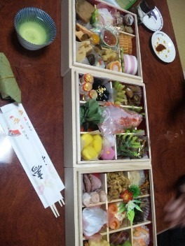

| 2012/01 03 Tue | ろってぃ-の1日の過ごし方。じいじい。 |
.
1日の過ごし方について
書きます＾ω＾
.
.
1日は和歌山県の
じいじいん家♪に
行ってきましたω・=
.
.
久しぶりに
みんなに会えて
心が落ち着いた時間でした＾ω＾.
.
楽しみにしていた
三段重箱

.
美味し過ぎました(o・〜・o)
.
お姉ちゃんと
食べまくっちゃった＾ω＾
.
やっぱ和食はいいね〜い＾＾
.
じいじいに
喫茶店に連れてってもらい
ココアも飲みに行きました♪
.
.
じいじいのお家行く前に
お墓参りに行ってきたのですが,場所が山の中で
トトロの中の世界みたいなんです
.
自然の空気を吸って
癒されてきました。

久しぶりに帰って
改めて思いました・ω・
.
.
まひろの家族は
なんか変です。
変わってます♪
.
.
お姉ちゃんとまひろは
同じ人種ではありません。笑
.
ままさんは 話しが噛み合いません。笑
.
お父さんは…？笑。
.
皆 一斉に違う話しをするんですω笑
.
おじいちゃんん家♪に行くと,
吉本新喜劇 見てるみたいで
ずっと爆笑してました ・ω・笑
.
.
.
そのまま大阪に帰って
ななせと待ち合わせをして
夜行バスで
東京に帰りました＾＾
.
コメント(104)
2012/01/03 15:13